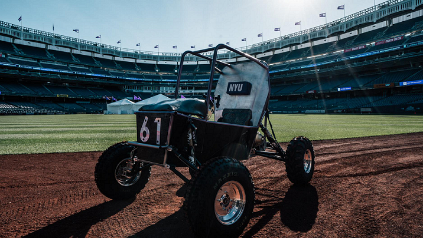
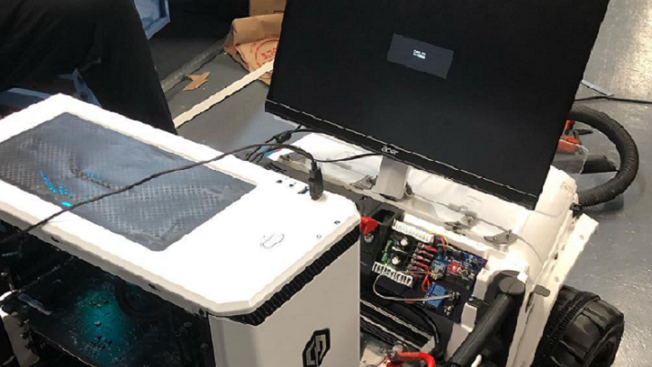

Vertically Integrated Projects
Long-term, large-scale projects that unite education, research, innovation, and entrepreneurship.

NYU Tandon Motorsports (2021 - 2022)
The goal of NYU Tandon Motorsports is the bring together a group of creative and curious individuals to design and build the best off-road racing machine.
The design of the vehicle incorporates a combination of fundamental engineering theories, student experiences, as well as advanced concepts geared specifically towards
automotive engineering.
As a former member of the Electronics subteam, my responsibilities included using Raspberry Pis for sensors, data acquisition, and pushing instructions to
motor drivers. I've also delivered a presentation on the basics of Git for incoming Spring 2022 semester team members. The presentation covered basic instructions, such as git add, commit,
branch, and push, as well as standard practices and conventions.

NYU Self-Drive (2020 - 2021)
NYU Self-Drive is in its 4th year of existence as a competition-based student lead team that pursues
learning and innovation in the Artificial Intelligence and Autonomous Vehicle space. Through competition based learning, with
mechanical/computer engineering aspects, the team seeks to provide a platform for members to familiarize themselves with industry
leading software and hardware to maximize experiential learning beyond the classroom.
As a former member of the Software Development Team, my responsibilities included using tools like
TensorFlow and Google Colab to build deep neural networks for our self-driving car simulation. Our main goal was to create a
2D self-driving car simulation that could navigate around pre-positioned obstacles designed by the user.